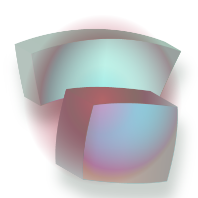
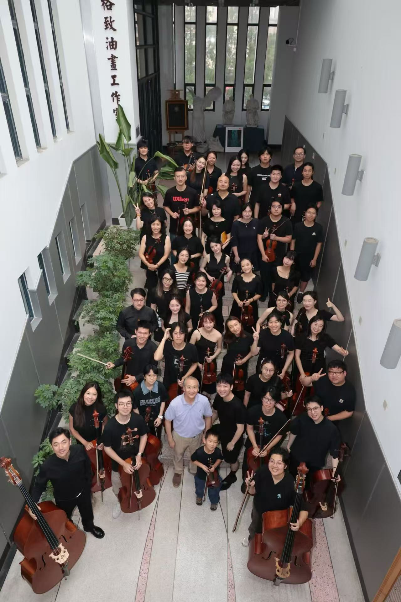
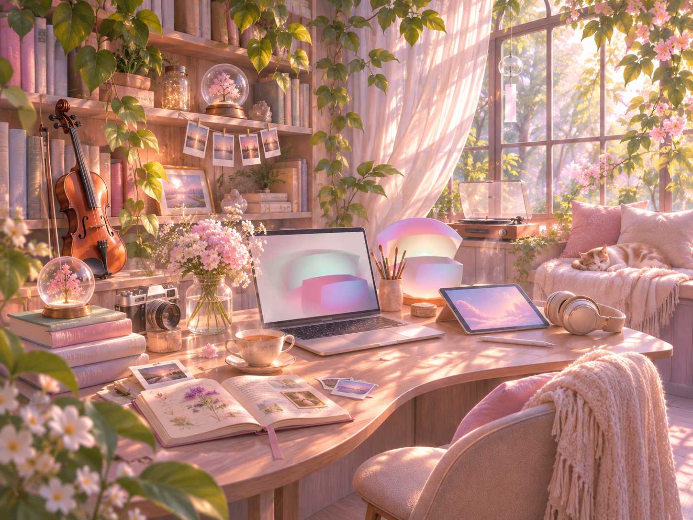
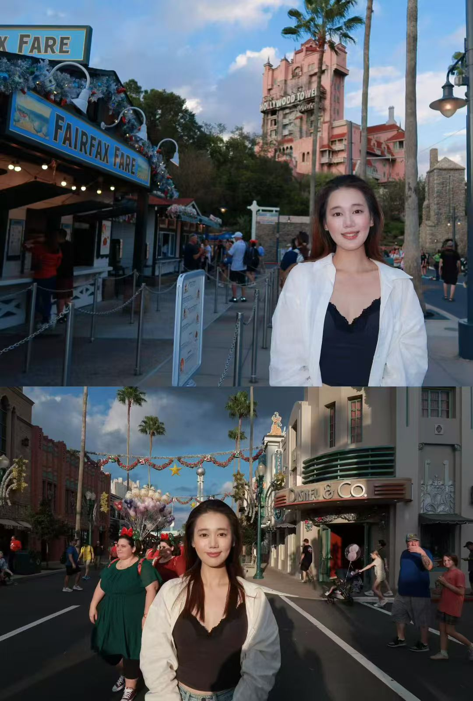

How will you begin to dream something no machine can dream?
I will begin with my own emotions, memories, and experiences. As someone who loves music and technology, I want to imagine a future where creativity remains deeply human. Machines can generate beautiful things, but my dreams come from the people I love, the music I play, and the moments that have shaped who I am. I want to create something that carries those personal meanings.
If memory is built from shared stories, which dreams do you want written into the past?
I want to remember a world where technology brings people closer together. I hope to create tools that help people express feelings they cannot easily put into words. I also want to preserve the small, ordinary moments: playing music with friends, conversations late at night, and the excitement of creating something together. These are the stories I hope will remain.
What remains of you when all your stories are rewritten?
I think what remains is my ability to feel, to question, and to make choices. My memories and identity may change as I grow, but my curiosity and desire to connect with others will continue to shape me. Even if the stories about my life are rewritten, the emotions I experienced and the relationships I built will always be part of me.
If you seek to realize your hopes through AI, how will you ensure that it remains faithful to your will?
I want AI to be a creative partner that expands my imagination without taking away my agency. I should always be able to question its suggestions, change its direction, and make the final decisions. As someone interested in designing interactive systems, I hope to build AI tools that help people discover their own ideas rather than simply accepting what a machine creates.

-
Which relationships will make your life
meaningful and magical? How do you nurture them?
My family, close friends, and the people who share my curiosity make life meaningful. I nurture these relationships by spending time together, listening to their stories, and supporting their dreams.

-
What are the aesthetics of the places that
you live your life and how did they come to be that way?
I imagine living in a warm, creative space filled with books, plants, music, and sunlight. I love places that combine modern technology with nature and personal memories. Every object should tell a little story about the life I have lived.

-
How do you spend your time? What stories
do you seek out - to tell or to listen to?
I spend my time exploring new ideas, making interactive projects, practicing violin, and talking with people from different backgrounds. I am especially interested in stories about emotions, creativity, and how people find meaning in their lives.

-
How will it sound? What will the rhythm of your day be?
My future will sound like classical music mixed with the sounds of everyday life: morning rain, conversations in a cafe, and laughter with friends. I want a rhythm that balances focused work, creative exploration, and peaceful moments.

-
How will you move through the world?
I want to move through the world with curiosity and openness. I hope to travel, experience different cultures, and learn from the people I meet. I want to stay adventurous while appreciating the beauty of ordinary life.

-
How do you spend your time? What stories
do you seek out, whether to share or to absorb
and pass on?
I want to spend my life learning, creating, and sharing meaningful experiences. I hope to tell stories about how humans and technology can create together, while listening to the unique experiences of others. The stories worth passing on are those that remind us what makes us human.